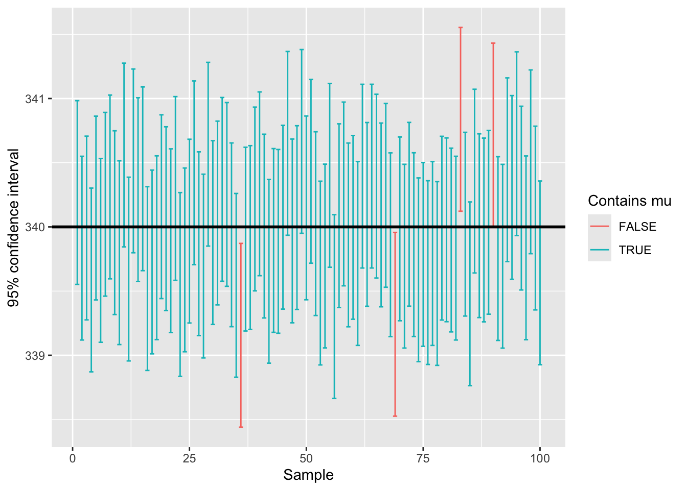
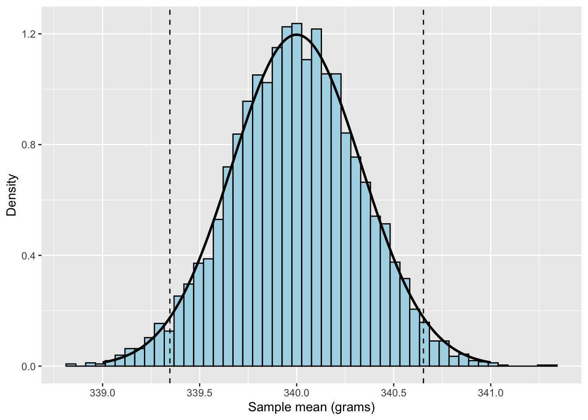
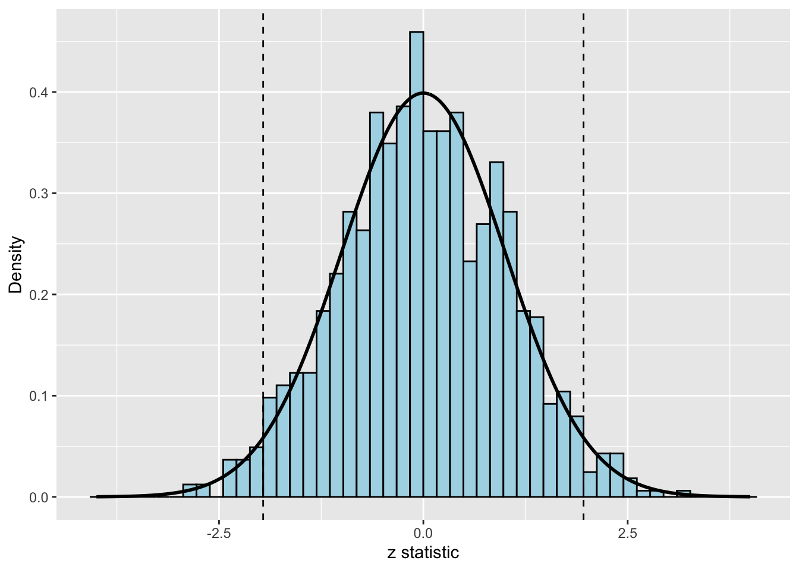

library(ggplot2)STAT 801A Lab 3: Inference About a Single Mean
Inference About a Single Mean
In previous work, the parameters for our probability distributions were assumed to be known. Real data does not typically come with its parameters attached, so we must estimate them from the data we do have. We have a sample, and we want to say something about the population it came from. That is inference.
Two questions drive this lab:
Confidence intervals: what values of \(\mu\) are consistent with our data?
Hypothesis tests: is our data consistent with a specific claim about \(\mu\)?
Throughout this lab we will assume \(\sigma\) is known.
Notation
| Symbol | Meaning | Known? |
|---|---|---|
| \(\mu\) | population mean | No. This is what we want. |
| \(\sigma\) | population standard deviation | Yes, assumed known |
| \(\bar{y}\) | sample mean | Yes |
| \(n\) | sample size | Yes |
| \(\mu_0\) | the value of \(\mu\) a hypothesis claims | Yes, it is given |
The sampling distribution of \(\bar{y}\)
Take a sample, calculate \(\bar{y}\). Take another, get a different number. The sample mean is itself a random variable with a distribution.
\[\bar{y} \sim N\left(\mu, \frac{\sigma^2}{n}\right)\]
Its standard deviation is called the standard error.
\[SE = \frac{\sigma}{\sqrt{n}}\]
Confidence Intervals
The sample mean \(\bar{y}\) is a point estimate of \(\mu\). But a point estimate on its own says nothing about how precise it is, and \(\bar{y}\) is almost certainly not exactly \(\mu\). A confidence interval reports a range of plausible values instead of a single number.
The formula
\[\bar{y} \pm z_{\alpha/2} \frac{\sigma}{\sqrt{n}}\]
The critical value comes from the standard normal. Calling qnorm with no mean or sd gives \(N(0, 1)\).
Note: a 95% interval puts 2.5% in each tail, so use qnorm(0.975), not qnorm(0.95)
qnorm(0.975)[1] 1.959964qnorm(0.95) # 90% CI[1] 1.644854qnorm(0.995) # 99% CI[1] 2.575829Computing one in R
A machine fills bags of coffee with a target weight of 340 grams. The population standard deviation is known to be 2 grams. An inspector weighs 20 bags.
weights <- c(338.1, 341.2, 339.5, 342.0, 337.8, 340.6, 336.9, 343.1,
339.9, 338.4, 341.7, 340.2, 337.5, 342.8, 339.1, 340.8,
338.6, 341.4, 336.2, 340.0)
n <- length(weights)
ybar <- mean(weights)
sigma <- 2
n[1] 20ybar[1] 339.79se <- sigma / sqrt(n)
crit <- qnorm(0.975)
margin <- crit * seCalculate interval
ybar - margin[1] 338.9135ybar + margin[1] 340.6665We are 95% confident the true mean fill weight is between 338.91 and 340.67 grams.
What 95% confidence means
The interval either contains \(\mu\) or it does not. Once the data is collected there is no probability about it.
The 95% describes the procedure, not this one interval: if we repeated the whole process many times, about 95% of the intervals would contain \(\mu\).
Simulating 100 confidence intervals
set.seed(20211)
ybars <- replicate(100, mean(rnorm(30, mean = 340, sd = 2)))
margin <- qnorm(0.975) * 2 / sqrt(30)
ci <- data.frame(sample_id = 1:100,
lower = ybars - margin,
upper = ybars + margin)
ci$contains <- ci$lower <= 340 & ci$upper >= 340
mean(ci$contains)[1] 0.9696 of the 100 simulated confidence intervals include the real value for \(\mu\). This number will be close to 95% every time the simulation is run.
ggplot(ci, aes(x = sample_id, ymin = lower, ymax = upper, color = contains)) +
geom_errorbar() +
geom_hline(yintercept = 340, linewidth = 1) +
labs(x = "Sample", y = "95% confidence interval", color = "Contains mu")
Note: every interval has the same width, since \(\sigma\) and \(n\) never change. Only the center moves. An interval misses when its sample mean lands too far from \(\mu\).
Hypothesis Testing
\(H_0\) -> the null hypothesis, the claim we assume is true
\(H_a\) -> the alternative hypothesis, what we would like to test
For a single mean the null always has this form.
\[H_0: \mu = \mu_0\]
The alternative takes one of three forms, depending on the question being asked.
\[H_a: \mu \neq \mu_0 \qquad H_a: \mu < \mu_0 \qquad H_a: \mu > \mu_0\]
The Null Distribution
The null distribution tells us what to expect when \(H_0\) is true. Everything in a hypothesis test is a comparison against it. The rejection region is its most extreme 5%.
We can build it by simulation -> pretend the null is true, draw many samples from it, and look at the results.
The machine is supposed to average 340 grams, with \(\sigma\) known to be 2. We take samples of 36 bags.
mu0 <- 340
sigma <- 2
n <- 36
ybars <- replicate(5000, mean(rnorm(n, mean = mu0, sd = sigma)))
sim_y <- data.frame(ybar = ybars)
head(sim_y) ybar
1 339.7215
2 339.9766
3 339.7522
4 340.1893
5 339.6982
6 340.5904Each value in sim_y is the mean of one simulated sample of 36 bags, assuming the null hypothesis is true.
se <- sigma / sqrt(n)
lower_cut <- mu0 - qnorm(0.975) * se
upper_cut <- mu0 + qnorm(0.975) * se
lower_cut[1] 339.3467upper_cut[1] 340.6533theory_y <- data.frame(x = seq(339, 341, length.out = 500))
theory_y$density <- dnorm(theory_y$x, mean = mu0, sd = se)
ggplot(sim_y, aes(x = ybar)) +
geom_histogram(aes(y = after_stat(density)), bins = 50,
fill = "lightblue", color = "black") +
geom_line(data = theory_y, aes(x = x, y = density),
linewidth = 1, inherit.aes = FALSE) +
geom_vline(xintercept = c(lower_cut, upper_cut), linetype = "dashed") +
labs(x = "Sample mean (grams)", y = "Density")
The simulated sample means follow the theoretical curve \(N(\mu_0, \sigma^2 / n)\).
The test statistic
\[z = \frac{\bar{y} - \mu_0}{\sigma / \sqrt{n}}\]
The numerator is how far our sample mean sits from the null. The denominator is the standard error.
So z answers: how many standard errors is our sample mean from the null value?
When \(H_0\) is true, this statistic follows the standard normal.
\[z \sim N(0, 1)\]
Rejection regions
The machine is supposed to average 340 grams, with \(\sigma\) known to be 2. A sample of 36 bags averages 339.1. Test at \(\alpha = 0.05\) whether the machine is off target.
\[H_0: \mu = 340 \qquad H_a: \mu \neq 340\]
mu0 <- 340
sigma <- 2
n <- 36
ybar <- 339.1
z <- (ybar - mu0) / (sigma / sqrt(n))
z[1] -2.7The rejection region is the set of test statistics extreme enough to reject. A two-tailed test at \(\alpha = 0.05\) splits the 5% between both tails.
qnorm(0.025)[1] -1.959964qnorm(0.975)[1] 1.959964We reject if \(z < -1.96\) or \(z > 1.96\). Our z is -2.7, so we reject \(H_0\) and conclude the machine is off target.
The null distribution on the z scale
Standardizing every simulated sample mean turns the picture above into the null distribution of \(z\).
SE <- sigma / sqrt(n)
z_stats <- replicate(1000, (mean(rnorm(n, mean = mu0, sd = sigma)) - mu0) / SE)
sim <- data.frame(z = z_stats)
head(sim) z
1 0.36167355
2 0.91216797
3 1.12192657
4 -0.61906779
5 -0.40803310
6 -0.04951538Same simulation, same samples, different scale. The center is now 0 and the cutoffs are \(\pm 1.96\) no matter what the data measures. Different problems will have different data scales, standardizing puts them all on the same one.
theory <- data.frame(x = seq(-4, 4, length.out = 500))
theory$density <- dnorm(theory$x)
ggplot(sim, aes(x = z)) +
geom_histogram(aes(y = after_stat(density)), bins = 50,
fill = "lightblue", color = "black") +
geom_line(data = theory, aes(x = x, y = density),
linewidth = 1, inherit.aes = FALSE) +
geom_vline(xintercept = c(-1.96, 1.96), linetype = "dashed") +
labs(x = "z statistic", y = "Density")
mean(abs(z_stats) > 1.96)[1] 0.048About 5% of simulated z statistics under the null hypothesis fall inside the rejection region. That is what \(\alpha\) means: the proportion of times we reject a null that was actually true. This is also known as a type 1 error.
p-values
The rejection region gives a yes or no. A p-value reports how extreme the data was: the probability, assuming \(H_0\) is true, of a test statistic at least as extreme as ours.
Two-tailed, so we take both tails.
2 * pnorm(abs(z), lower.tail = FALSE)[1] 0.006933948Since 0.0069 < 0.05, we reject the null
One-tailed tests
If only one direction matters, the alternative points one way.
\[H_0: \mu = 340 \qquad H_a: \mu < 340\]
All 5% goes into the lower tail.
qnorm(0.05)[1] -1.644854pnorm(z)[1] 0.003466974Note: the one-tailed critical value is closer to zero, which makes rejecting easier
| Alternative | Critical value at \(\alpha = 0.05\) | p-value in R |
|---|---|---|
| \(\mu \neq \mu_0\) | \(\pm\) qnorm(0.975) |
2 * pnorm(abs(z), lower.tail = FALSE) |
| \(\mu < \mu_0\) | qnorm(0.05) |
pnorm(z) |
| \(\mu > \mu_0\) | qnorm(0.95) |
pnorm(z, lower.tail = FALSE) |
Writing a z-score function
R has no built-in z test, so this is a good place to write our own function.
z_c <- function(y, mu = 0, sigma = 1) {
# Remove missing values
count_missing <- sum(is.na(y))
message(paste('Number of missing observations that are excluded:', count_missing))
y <- y[!is.na(y)]
# Compute from data
ybar <- mean(y)
n <- length(y)
# Compute test statistic
test_statistic <- (ybar - mu) / (sigma / sqrt(n))
# Return value
return(test_statistic)
}Run it on the coffee weights against a null value of 340
weights <- c(338.1, 341.2, 339.5, 342.0, 337.8, 340.6, 336.9, 343.1,
339.9, 338.4, 341.7, 340.2, 337.5, 342.8, 339.1, 340.8,
338.6, 341.4, 336.2, 340.0)
z_c(weights, mu = 340, sigma = 2)Number of missing observations that are excluded: 0[1] -0.4695743The sample mean of 339.79 sits less than half a standard error below the target
z_coffee <- z_c(weights, mu = 340, sigma = 2) Number of missing observations that are excluded: 02 * pnorm(abs(z_coffee), lower.tail = FALSE)[1] 0.6386592Large p-value, so we do not reject. This matches the confidence interval from earlier, which contained 340. A 95% interval and a two-tailed test at α=0.05 always agree
Practice Problems
Answer each question in the code chunk provided. Where a problem asks for hypotheses, write them in LaTeX.
Problem 1:
A sample of 25 batteries has a mean lifetime of 487 hours. The population standard deviation is known to be 45 hours.
(a) Compute the standard error.
(b) Find the critical value for a 95% confidence interval.
(c) Construct the 95% confidence interval.
(d) Interpret the interval in a sentence.
We are 95% confident….
(e) Build a 99% interval. Is it wider or narrower, and why?
Problem 2:
A machine fills bags with a target of 340 grams, \(\sigma\) known to be 4. A sample of 36 bags averages 338.5. Test at \(\alpha = 0.05\) whether the mean has shifted.
(a) State the hypotheses.
\[H_0: \mu \qquad H_a: \mu \]
(b) Compute the test statistic.
(c) Find the rejection region.
(d) Is the test statistic in the rejection region? State your conclusion.
(e) Compute the p-value and confirm it gives the same conclusion.
Problem 3:
A trainer claims a new program raises mean vertical jump above 24 inches. Fifteen athletes are measured, with \(\sigma\) known to be 1.2 inches.
jumps <- c(25.1, 23.8, 26.2, 24.9, 25.5, 22.9, 26.8, 24.2,
25.9, 23.6, 27.1, 25.3, 24.7, 26.4, 25.0)(a) State the hypotheses. This is a one-tailed test.
\[H_0: \mu \qquad H_a: \mu \]
(b) Compute the sample mean and the standard error.
(c) Compute the test statistic.
(d) Find the critical value at \(\alpha = 0.05\) and state your conclusion.
(e) Compute the one-tailed p-value.
(f) Build a 95% confidence interval for the mean vertical jump.
Final Step
Render your document. Click the Render button at the top of the editor, or press Ctrl + Shift + K.
If the render fails, read the error message. It names the chunk that caused the problem. The most common causes are a missing closing parenthesis, or an object used before it was created.